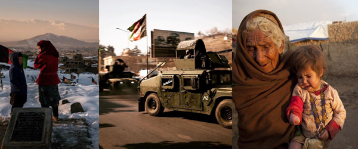

Human Cost of War in Afghanistan
Home
Behind Numbers
Hope and Fear

Afghan and American Lives in the 19-year of War
Victims of 9/11 Attack
U.S. Soldiers
Afghan Forces
9,000
23,119
+100,000
Afghan Civilian Causuatlies of War Between 2009-2019: 100,000
Deaths:
Injuries:
References
United Nations Assistance Mission to Afghanistan, 2020. "REPORTS ON THE PROTECTION OF CIVILIANS IN ARMED CONFLICT".
Accessed on November 20, 2020.
Wikipedia. 2020. "Coalition casualties in Afghanistan."
Accessed on November 20, 2020.
The Asia Foundation. 2020. "A Survey of Afghan People."
Accessed on November 20, 2020.
The Associated Press. 2016. "A timeline of U.S. troop levels in Afghanistan since 2001."
Accessed on November 20, 2020.